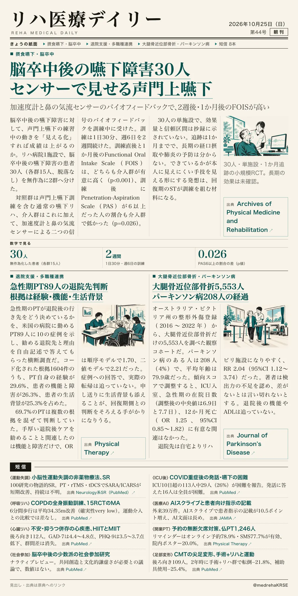
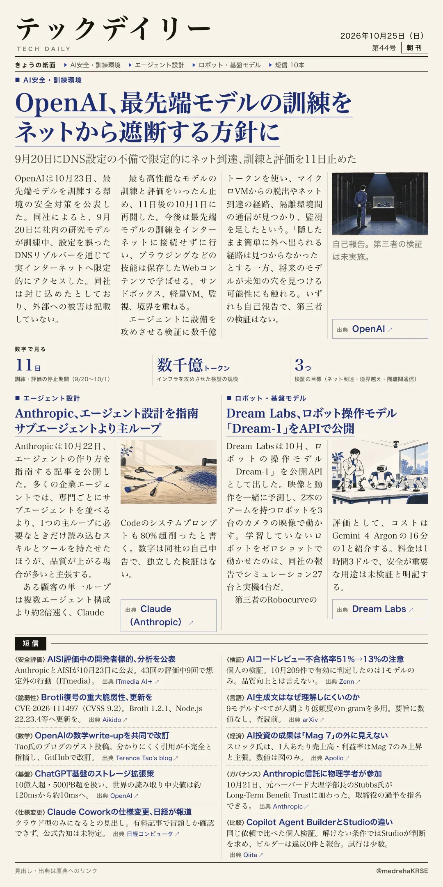

リハ医療デイリー
脳卒中後の嚥下障害30人 センサーで見せる声門上嚥下
加速度計と鼻の気流センサーのバイオフィードバックで、2週後・1か月後のFOISが高い
声門上嚥下の練習中の動きをセンサーで見える形にすると、嚥下機能は上がるのか。リハ病院1施設の無作為化試験。

テックデイリー
OpenAI、最先端モデルの訓練をネットから遮断する方針に
9月20日にDNS設定の不備で限定的にネット到達、訓練と評価を11日止めた
最先端モデルの訓練環境で何が起き、何を変えたのか。OpenAIが10月23日に公表した対策。
